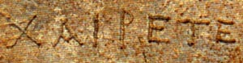

|
|
|
|
Wishes in Greek may be expressed by ei@qe with the Optative (a wish for the future), or ei) ga/r with the Indicative (wishes for the present or past). The negative is mh/. Examples of these expressions of wish are given on page 265 at K.WISHES.
When a speaker or writer asks a question that expresses bewilderment and does not really expect an answer, the Subjunctive is used in Greek, with mh/ for the negative. Look at page 273 at O. DELIBERATIVE QUESTIONS for examples.
As you realize from your reading of Chapter XXXII, Greek has some special endings for nouns, pronouns, adjectives and verbs which indicate a pair, two of something rather than singular or plural. These are not common forms and you will usually find them in a context concerning something that obviously comes in twos, such as eyes, or two people acting together. The details of these forms are on pages 98 and 99.
EXERCISES XXXI-XXXII, A. Find the expressions of wish in Chapter XXXI and identify the mood and tense of the verbs.
XXXI-XXXII, B. Reread Chapter XXXII with special attention to the dual forms, expressions of wish and deliberative questions.
Answer Key eu}ge You have come to the end of your introduction to Ancient Greek with Thrasymachus. You are ready to move on to authentic Greek literature.  For a review of forms and syntax, see Professor Helma Dik's HANDOUTS.